Sports Analytics
Data as a competitive advantage
Introduction
5th year PhD candidate at NYU Stern
interests
- Social influence
- Causal Inference and Web Experiments
- Bayesian modeling
- Prediction
toolbox


lifelong Eagles fan


Outline
- Big Picture: Sports questions and answers
- Measurement
- Prediction
- Decision
- Second half: Ranking methods
The Rise of Sports Analytics
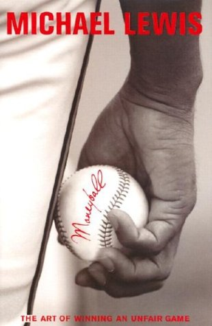More Recently
Recipe for success
- Ask a good question
- Gather data that can answer it
- Carefully build and test simple models
- Embrace uncertainty
- Be a Bayesian
Importance of Questions
Far better an approximate answer to the right question, which is often vague, than an exact answer to the wrong question, which can always be made precise.
— John Tukey
Data
Building Models
Since all models are wrong the scientist cannot obtain a ‘correct’ one by excessive elaboration. On the contrary following William of Occam he should seek an economical description of natural phenomena. Just as the ability to devise simple but evocative models is the signature of the great scientist so overelaboration and overparameterization is often the mark of mediocrity.
— George E.P. Box
Uncertainty
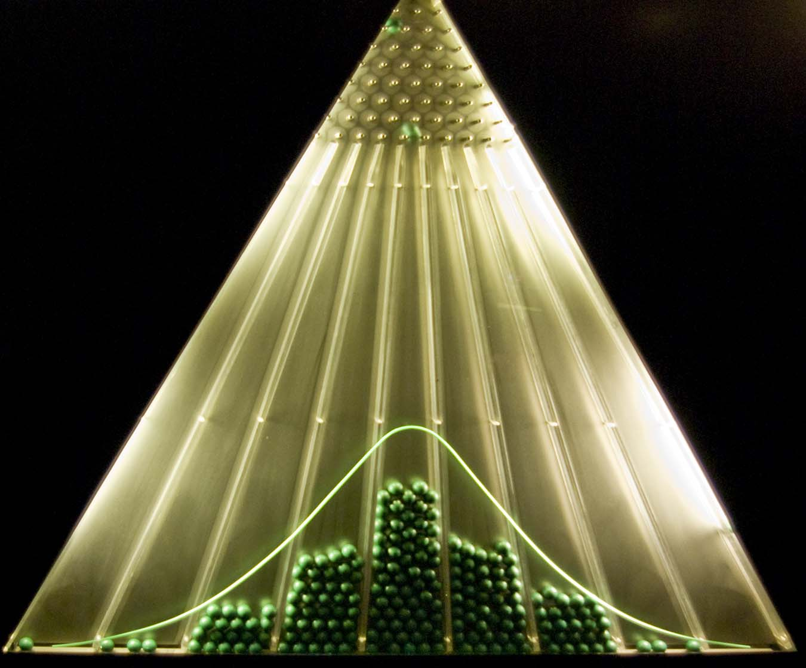Be a Bayesian
Three Types of Questions
- Measurement
- Prediction
- Decision
Measurement
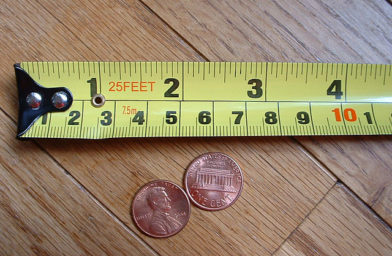
- Normalize
- Put a confidence interval on it
- Nothing is i.i.d.
Common theme?
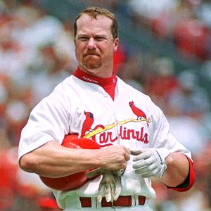
Counts = The most useless
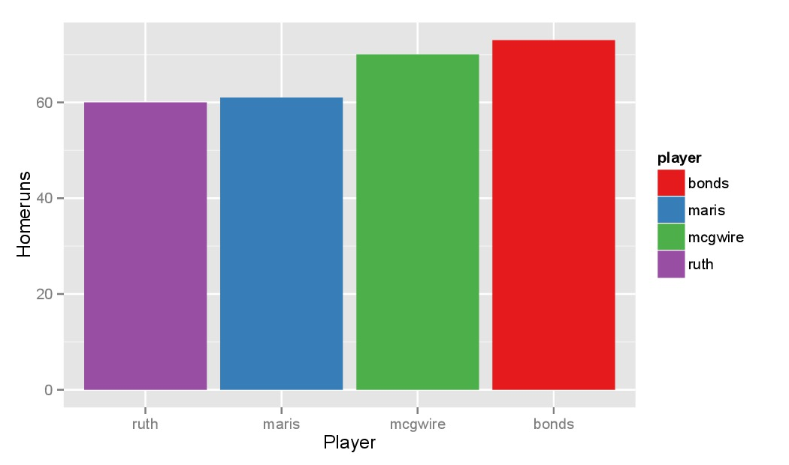Normalize by Opportunity = Rates
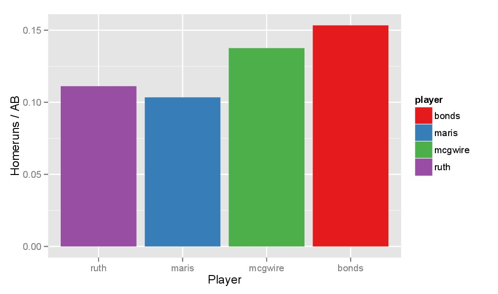Normalize by Opportunity (Take 2)
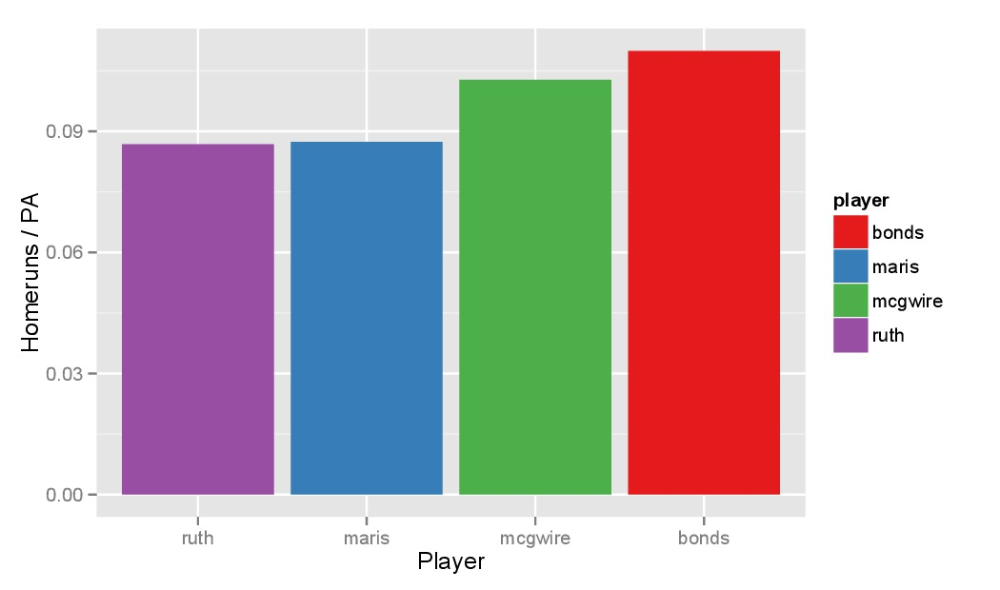Account for Uncertainty
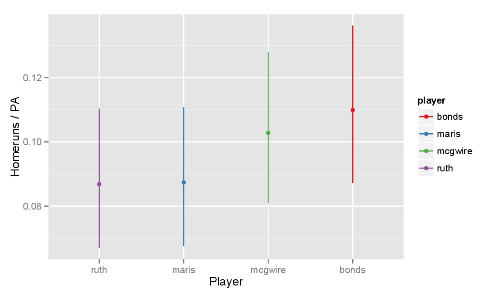Opponent Adjustments
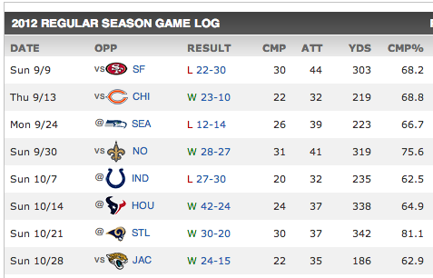\[ P(\mbox{complete}=1) = \mbox{logit}^{-1}(\alpha_i + \beta_j + \epsilon_{ijk} )\]
Application: NFL Draft Pick Value
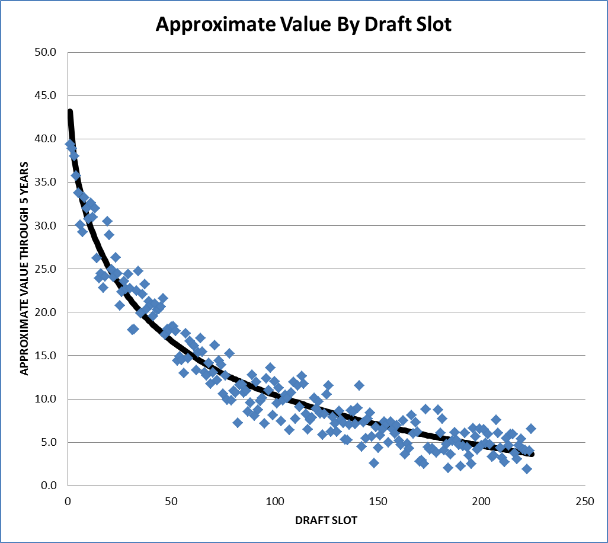Prediction
- Mean regression
- Predict a distribution
- Forward cross-validation
Regression to the Mean
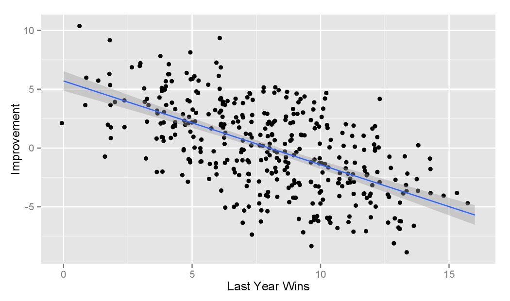Shrinkage Estimators
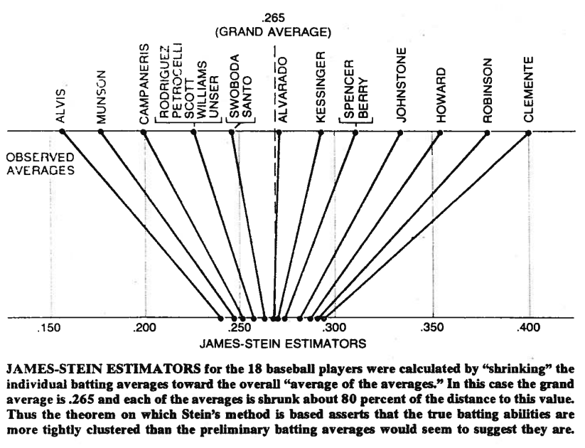Predict a Distribution
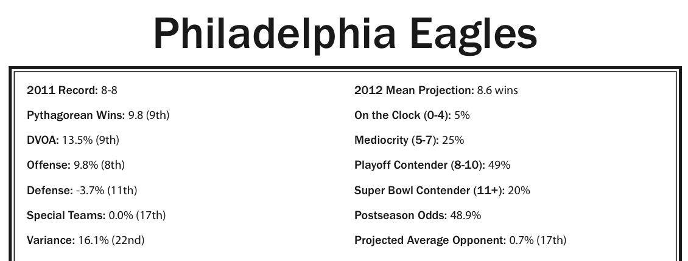Forward Cross-validation
- Fit the model to the data \(y_1, y_2, \ldots, y_t\) and let \(\hat{y}_{t+1}\) denote the forecast of the next observation.
- Compute the error \(e_{t+1} = y_{t+1} - \hat{y}_{t+1}\) for the forecast observation.
- Repeat step 1 for \(t = m, \ldots, n-1\) where \(m\) is the minimum number of observations needed for fitting the model.
- Compute MSE or ROC from \(e_{m+1}, \ldots, e_n\)
Application: In-game Win Probabilities
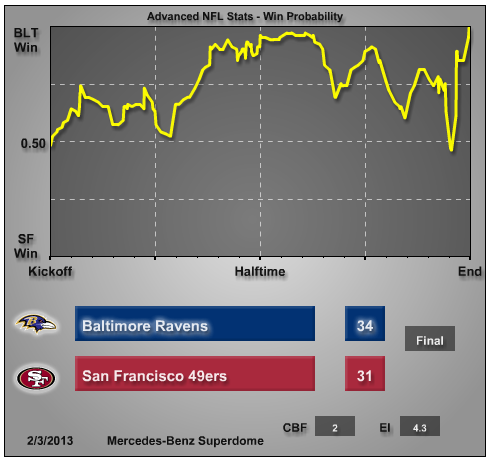Decision
Similar to prediction, but you control some of the variables:
- Personnel
- Strategy
Case Study: 4th Down Decision
In the NFL, teams have 3 options on 4th down:
- Run a play
- Field Goal Attempt
- Punt
http://www.advancednflstats.com/2009/09/4th-down-study-part-1.html
Running a play:
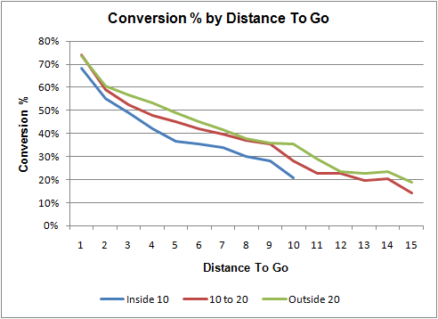Field Goal Attempt:
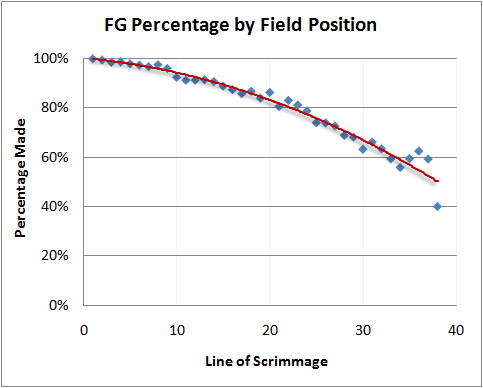Punt:
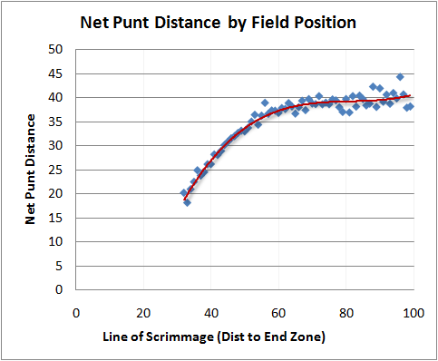Field Position Value:
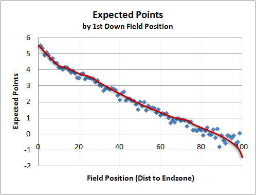Optimal Decision:
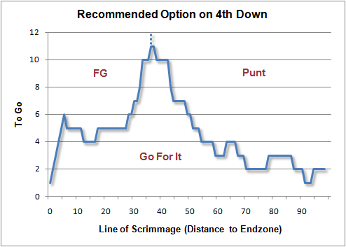Ranking Models for NFL Teams
Ranking == Decision Tool
where to go to college?
Ranking == Description
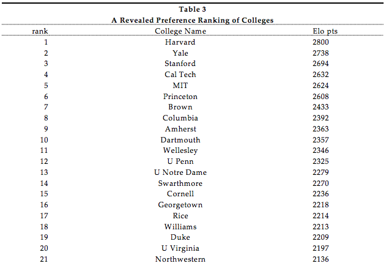which colleges are being chosen over others?
"A Revealed Preference Ranking of U.S. Colleges and Universities" (Avery et al. 2004)
Ranking == Total ordering
- set of items: \( X \)
- binary relation: \( \geq \)
- transitivity: \( a \geq b \; \wedge \; b \geq c \Rightarrow a \geq c \)
- totality: \( a \geq b \; \vee \; b \geq a \; \forall a, b \in X \)
- anti-symmetry: \( a \geq b \; \wedge \; b \geq a \; \Leftrightarrow a = b \)
Ranking == Classification
Ranking problem can be transformed into a two-class classification problem via the pairwise transform.
Goal: Learn \( \; f : X \times X \rightarrow \{-1,1\} \).
Ranking == Regression
All we have to do is use: \( (\mathbb{R}, \geq) \)!
- Obviously satisfies total ordering criteria.
- But has a bit more: we have/need a metric.
- Shows ranking can be a regression problem.
Goal: Learn scoring function \( q : X \rightarrow \mathbb{R} \) .
Getting it wrong: Loss Functions
- Descriptive loss
- Predictive loss
- Ranking agreements
Zero-One Loss
Count the games where the ranking-predicted winner is upset.
Misrank Loss
If the ranking-predicted winner loses, add the difference in ranks to the loss.
Win Matrix
Ranking Agreement
Kendall tau distance is a metric that counts the number of pairwise disagreements between two rankings.
Two rankings \( R_1, R_2 \) disagree on pair \( i, j \) if:
\[ R_1(i) > R_1(j) \wedge R_2(i) < R_2(j) \]
Useful if we want to match some existing ranking, say ESPN.com Power Rankings.
Methods
- Pythagorean wins
- Eigenvector
- Bradley-Terry-Luce
- Optimal Rankings (if time)
Pythagorean Wins
From 1988 through 2004, 11 of 16 Super Bowls were won by the team that led the NFL in Pythagorean wins, while only seven were won by the team with the most actual victories. Super Bowl champions that led the league in Pythagorean wins but not actual wins include the 2004 Patriots, 2000 Ravens, 1999 Rams and 1997 Broncos.
— Football Outsiders Almanac (2011)
See also this post.
Formula
Points for \( = y \), Points against \( = x \)
Win Rate \( = \frac{y^{\beta}}{x^{\beta} + y^{\beta}} \)
Set \( \beta \) empirically, different for each sport.
\( \beta \) can be thought of as a shrinkage parameter.
Visualization
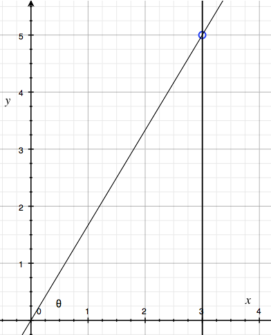Pythagorean Wins
| 1 | 9 | 17 | 25 | ||||
| 2 | 10 | 18 | 26 | ||||
| 3 | 11 | 19 | 27 | ||||
| 4 | 12 | 20 | 28 | ||||
| 5 | 13 | 21 | 29 | ||||
| 6 | 14 | 22 | 30 | ||||
| 7 | 15 | 23 | 31 | ||||
| 8 | 16 | 24 | 32 |
Eigenvector Method
Idea: iteratively adjust for strength of schedule. Give more credit to victories over teams which are "good"
\( r_i \) is the score of team \( i \). \( a_{ij} \) is 1 if \( i \) beat \( j \).
\[ \lambda r_i = \frac{1}{n_i} = \sum_{j=1}^N a_{ij} r_j \]
\[ \mathbf{A} \mathbf{r} = \lambda \mathbf{r} \]
Perron-Frobenius
If \( \mathbf{A} \) is nonnegative and irreducible, it has a strictly positive eigenvector corresponding to its largest eigenvalue.
Intuition
\[ \begin{array}{r} DAL \\ NYG \\ PHI \\ WAS \end{array} \left( \begin{array}{cccc} 0 & 1 & 2 & 0 \\ 1 & 0 & 1 & 1 \\ 0 & 1 & 0 & 0 \\ 2 & 1 & 2 & 0 \end{array} \right) \left( \begin{array}{c} 1 \\ 1 \\ 1 \\ 1 \end{array} \right) = \left( \begin{array}{c} 3 \\ 3 \\ 1 \\ 5 \end{array} \right) \]
Second order wins
\[ \left( \begin{array}{cccc} 0 & 1 & 2 & 0 \\ 1 & 0 & 1 & 1 \\ 0 & 1 & 0 & 0 \\ 2 & 1 & 2 & 0 \end{array} \right) \left( \begin{array}{cccc} 0 & 1 & 2 & 0 \\ 1 & 0 & 1 & 1 \\ 0 & 1 & 0 & 0 \\ 2 & 1 & 2 & 0 \end{array} \right) \left( \begin{array}{c} 1 \\ 1 \\ 1 \\ 1 \end{array} \right) = \left( \begin{array}{c} 5 \\ 9 \\ 3 \\ 11 \end{array} \right) \]
Must normalize this output vector by its norm.
K-th order rank
\[ r_k = \frac{A^{k} r_0}{| A^{k} r_0 | } \]
The limit of this is just the first eigenvector!
Power iteration method
def power_iteration(m, iters=10000):
x0 = np.ones(m.shape[0])
for i in range(iters):
x0 = np.dot(m,x0)
x0 /= np.linalg.norm(x0,1)
return x0
Aside: PageRank
Redefine the preference matrix \( A \):
\[ A' = (1 - \alpha) A + \alpha \frac{1}{N} M \]
where \( M \) is a matrix of all ones.
Eigenvector Method
| 1 | 9 | 17 | 25 | ||||
| 2 | 10 | 18 | 26 | ||||
| 3 | 11 | 19 | 27 | ||||
| 4 | 12 | 20 | 28 | ||||
| 5 | 13 | 21 | 29 | ||||
| 6 | 14 | 22 | 30 | ||||
| 7 | 15 | 23 | 31 | ||||
| 8 | 16 | 24 | 32 |
Bradley-Terry-Luce Model
\[ P(i>j) = \frac{1}{1 + e^{-(q_i - q_j)}} = \mbox{logit}^{-1}(q_i - q_j) \]
(Bradley & Terry, 1952; Luce, 1959)
This is basically the same as a Rasch model from education.
BTL evolved
- Add a parameter for home-field advantage.
- Weight observations so that older games count less toward the likelihood.
- Regularization.
- Add control variables for random events that affect outcomes but are NOT part of team quality.
- e.g. fumbles lost, defensive touchdowns, missed field goals.
BTL Method
| 1 | 9 | 17 | 25 | ||||
| 2 | 10 | 18 | 26 | ||||
| 3 | 11 | 19 | 27 | ||||
| 4 | 12 | 20 | 28 | ||||
| 5 | 13 | 21 | 29 | ||||
| 6 | 14 | 22 | 30 | ||||
| 7 | 15 | 23 | 31 | ||||
| 8 | 16 | 24 | 32 |
Optimal Rankings
What's the absolute best we can do in describing the data with a ranking?
Games as a Graph
Topological Sort

Cycles
Long Cycles

Removing the Cycles
A feedback arc set is a set of edges whose removal makes the graph acyclic.
# g = igraph.Graph()
feedback_arcs = g.feedback_arc_set(method='exact')
g.delete_edges(feedback_arcs)
NP-Complete!
Optimal Rank
| 1 | 9 | 17 | 25 | ||||
| 2 | 10 | 18 | 26 | ||||
| 3 | 11 | 19 | 27 | ||||
| 4 | 12 | 20 | 28 | ||||
| 5 | 13 | 21 | 29 | ||||
| 6 | 14 | 22 | 30 | ||||
| 7 | 15 | 23 | 31 | ||||
| 8 | 16 | 24 | 32 |
Evaluation
Week 8 Power Rankings Similarity

Week 17 Power Rankings Similarity

Descriptive

In-Season Prediction

Post-Season Prediction

Make your predictions public
http://creds.me
(shameless plug)